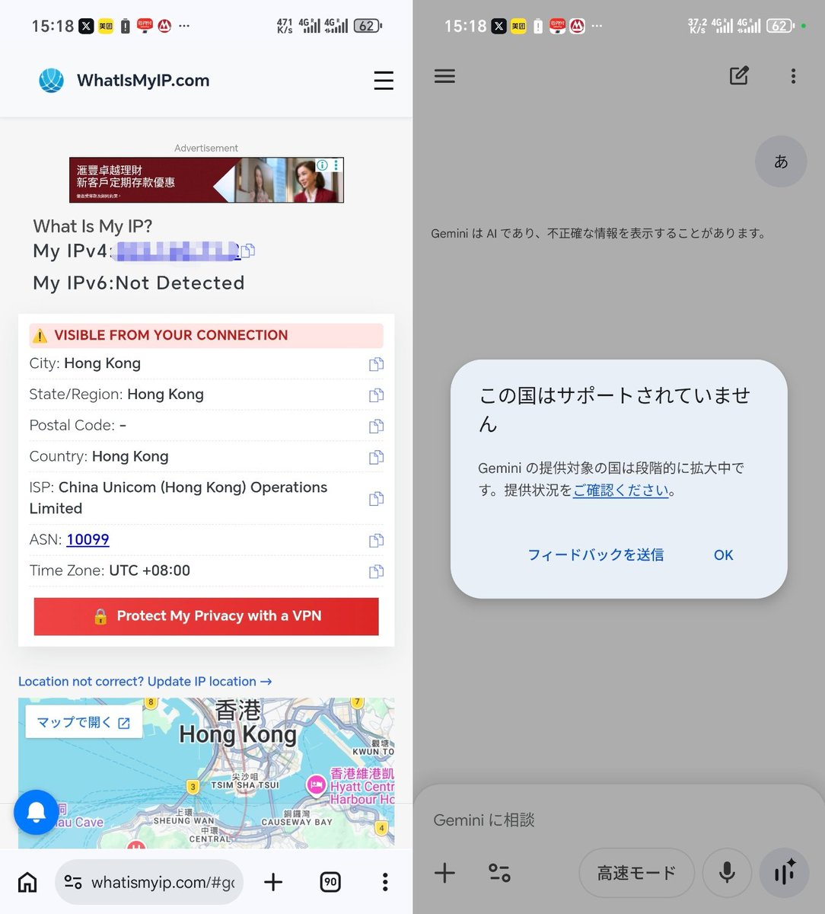

@kuroyei 你不会买个SingTel吗，非得用你那CMLink？



Roamify折扣，必须大于3刀才可以优惠！正好中国大陆10天3GB的eSIM促销3.5刀，折完仅需0.5刀拿下SingTel原生🇸🇬IP，可直接用AI服务！🤗
1）注册新号 https://t.co/WeKmiA5B3H 后登录；
2）再选China，10天3GB刚好是3.5刀；
3）应用优惠码（图3）后只需再付0.5刀； https://t.co/zE6FfK3oNF
1）注册新号 https://t.co/WeKmiA5B3H 后登录；
2）再选China，10天3GB刚好是3.5刀；
3）应用优惠码（图3）后只需再付0.5刀； https://t.co/zE6FfK3oNF
外国人向けの中国渡航用 SIM は基本的に香港のインターネットに繋がるようになっているので
Gemini は使えないし、香港のネット広告が配信されます https://t.co/SnLDV8IhY6 https://t.co/w1j7lUHE7v
Gemini は使えないし、香港のネット広告が配信されます https://t.co/SnLDV8IhY6 https://t.co/w1j7lUHE7v